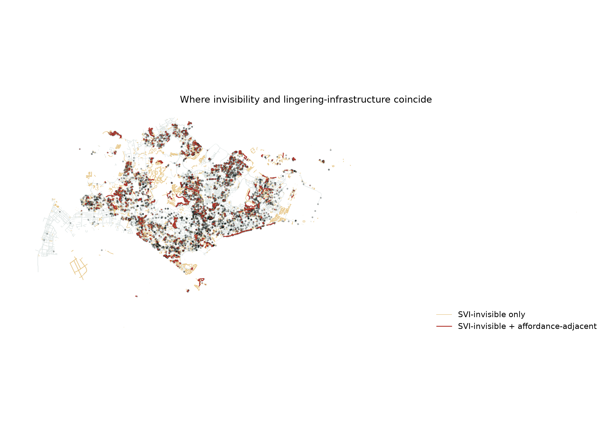
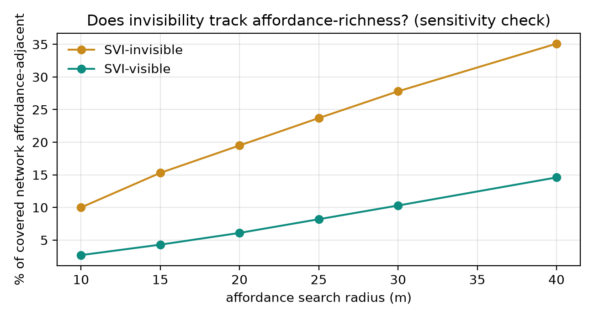

Pilot 01 found that 26.5% of Singapore's covered pedestrian network is plausibly invisible to road-based street-view imagery. This notebook asks the sharper question: are the invisible parts more or less likely to be equipped for lingering than the visible parts — benches, shelters, hawker centres, playgrounds? If invisibility and affordance-richness coincide, that's a materially stronger claim than invisibility alone.
Why this notebook exists. The original plan for this pilot involved field observation — standing at MRT exits with a stopwatch, counting who paused and who passed through. Under time pressure, this notebook substitutes an open-data-only test of a related question, answerable without leaving the desk.
The reframing, stated precisely. The accompanying writing sample defines threshold affordance as the capacity of a space to invite lingering, waiting, or gathering — not the occurrence of those behaviours on any given day. Infrastructure that materially enables lingering is arguably a more direct operationalisation of capacity than a few hours of field counts would have been, which measure occurrence under one set of weather, time, and social conditions. This is not a lesser substitute for fieldwork; it targets the construct more literally.
Data sources, all open: OpenStreetMap amenity/leisure tags for lingering-supportive infrastructure (amenity=bench, amenity=shelter, amenity=food_court — the tag Singapore's OSM community uses for hawker centres — amenity=community_centre, leisure=playground), cross-referenced against Pilot 01's saved visibility classification. No new environment, no API keys, no fieldwork.
A segment is affordance-adjacent if any lingering-supportive feature lies within 20 m of it — matching the scale used for the SVI-visibility proxy in Pilot 01, so the two classifications are comparable.
# %% 3. Proximity classification AFFORDANCE_RADIUS_M = 20 covered["dist_to_affordance_m"] = covered.geometry.apply(lambda g: g.distance(affordance_union)) covered["affordance_adjacent"] = covered.dist_to_affordance_m <= AFFORDANCE_RADIUS_M # → 19.5% of SVI-invisible vs 6.1% of SVI-visible

Breaking the cross-tabulation down by affordance type shows the effect isn't spread evenly — it's concentrated in exactly the estate-interior features you'd expect.
| Affordance type | % of invisible walkway adjacent | % of visible walkway adjacent |
|---|---|---|
| Shelter | 9.1% | 2.3% |
| Playground | 8.8% | 2.5% |
| Hawker / food court | 1.4% | 1.0% |
| Community centre | — | — |
Shelter and playground drive nearly all of the effect — both are exactly the kind of estate-interior feature (covered rest points, void-deck-adjacent play areas) that sits deep within housing blocks, away from roads. Hawker centres show almost no difference, plausibly because they require vehicle access for supplies and are therefore also road-adjacent, cancelling out the visibility effect that holds for purely pedestrian infrastructure. Community centres are too rare a feature to move the numbers either way.

Current SVI-based urban analytics is not blind at random. It is blind in a way that correlates with where public life has been given room to happen.
Note on data provenance: this notebook's own saved-output cell writes a per-segment affordance overlay (sg_covered_affordance_overlay.geojson) — but that step hasn't yet been run through to completion and persisted. Re-running this notebook end-to-end would produce it; downstream work (e.g. Pilot 03) currently substitutes SVI-visibility for this variable until that file exists.